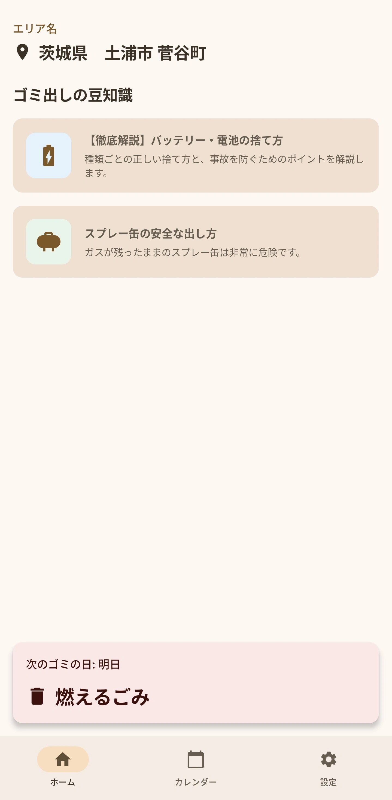

通知で忘れない
ごみ出し日前に通知。日々の生活で忘れがちな分別日を自然にサポートします。

必要な情報へすぐ届く、軽くて分かりやすい体験を重視しています。
ごみ出し日前に通知。日々の生活で忘れがちな分別日を自然にサポートします。
通信が不安定でも使える設計。必要な情報を端末内で確認できます。
個人情報保護を意識した構成で、安心して利用しやすい設計を目指しています。
現在は茨城県内 7 市町村に対応しています。
2026年4月に v1 と Google Play 配信を予定しています。
質問・連携相談はメールまたは公式 X で受け付けています。
メール: info@pureux.jp
X: @pureux_dev